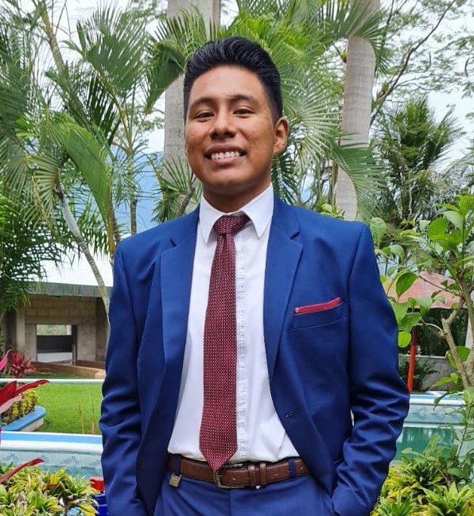

Ing. en DyG de Software. Henry López Vázquez
Actualmente soy desarrollador libre e independiente en busca de una oportunidad laboral para crecer profesionalmente y dedicarme a lo que me gusta. Mis pasatiempos favoritos: la música, la tecnología y el deporte. En ámbito de estudio tengo títulos en T.S.U en Desarrollo de Software Multiplataforma, Lic. en Ingeniería en Desarrollo y Gestión de software, tengo algunos certificacios relacionados a TI. En el ámbito laboral he tenido experiencia trabajando con 2 empresas, en cada una por 4 meses como practicante y como colaborador en un proyecto dentro de una universidad en un lapso de 8 meses, además desarrollando sistemas con pequeños cñiet. A nivel personal me encuentro aprendiendo nuevas tecnologías y mejorando mi desempeño en estas, estoy abierto a aprender nuevas tecnologías durante la marcha, es algo carateristico, aprender y ponerlo en práctica.

Mis habilidades
Experiencia laboral
-
Mayo - Agosto 2021
DotNet - Desarrollo de Sistemas S.A de C.V.
En esta empresa, fui parte de un equipo de desarrollo y mantenimiento de un sitio web para facturar recibos y dar timbres a clientes que tuvieran un suscripción a la página.
-
Enero - Septiembre 2022
UTS - Universidad Tecnológica de la Selva
Fui parte del desarrollo de un sistema de administración de ingresos, egresos, apoyos, proyectos, etc. de la universidad, trabajé como colaborar FullStack.
-
Enero - Abril 2023
ECOSUR - El Colegio de la Fronte Sur
En esta empresa, fui parte del equipo de la unidad de Tecnologías de la Información y Comunicación, desarrollando un sistema de control de acceso remoto para una puerta.